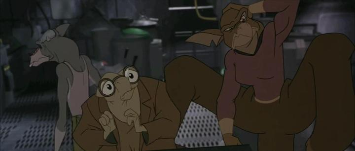

In the year 3028... I'm still waiting for a Bluray release of "Titan A.E."That's what it feels like, anyway. A few holdout animated films did get late Bluray releases around 2020, but "Titan A.E." remained off the table along with a few others (I'm also still waiting for "Quest for Camelot"). Eventually, I gave up waiting and found a used DVD copy. It's a shame, since the DVD picture does not look great, and a much better HD transfer has been available on streaming services for years. On the other hand, there's a good amount of bonus features on the DVD, including a commentary from directors Don Bluth and Gary Goldman, talking about their struggles mixing 2D and 3D animation and the troubled production within the studio system.And this DVD was my first time watching the full movie, over two decades after its release. Which is strange, since my family raised me heavily on VHS tapes and trips to the theatre almost every week, and I would follow every magazine article and movie trailer with excitement in the 90's. The release of "Titan" was in my prime childhood, but all I remember from the marketing was the cool but ambiguous poster - I couldn't tell from it if this was animated or live-action. I didn't see a single movie trailer for it. When I finally saw a magazine feature for it, the movie had already come and gone. It's no wonder the movie was a box-office flop, as the studio clearly had no idea how to market it, and ultimately didn't bother. The tragic thing is that it would be Don Bluth's last film, perhaps because of the poor box office, or the frustration of the production (much of the staff were let go before the movie was released as Fox Animation Studios shut its doors). Part of the issue, and perhaps interest, is that "Titan A.E." was aimed for an older, teenage audience, complete with death and blood, practically unheard of in American animation (but therefore inappropriate to market to children). Set in a distant future, a big science project called "Titan" puts the human race on the radar of a hostile alien race known as the Drej. A few ships manage to escape before the Earth is blown up, a dramatic and tragic opening. Young boy Cale is one of the few survivors, holding a key given by his father, the lead scientist on the Titan project, who drove the TItan elsewhere and presumably died. Fast forward to a cynical 20-year old Cale, working a deadend job in space with aliens that show little respect to the human race. He's upset at his father for abandoning him, and has little interest in his species and its history. That changes when an old friend of his father shows up. showing that his key (a ring) is actually a map to guide them to the Titan, which might serve as a new home for the human race, and be their last chance for survival.  It's hard to make a compelling science-fiction story, but "Titan A.E." maanges to do some original and clever things, resulting in a solid adventure (fan-favourite Joss Whedon is credited as one of the writers). Of course, a lot of the movie is just following the treasure map, getting kidnapped, a romantic interest, a double-crossing twist, and all the usual tropes. It's not quite on the memorable level of Disney's "Atlantis - The Lost Empire" or "Treasure Planet" (which would release not long after, targeting a similar audience and tone), but hardcore sci-fi fans might appreciate what "Titan" is doing more. I think the flaws on the movie are Don Bluth's animation style being applied to humans in an action movie. His strengths are with cute children and animals with big eyes, and some of that shines through with the alien designs, which are diverse and surprisingly fun. But the human characters all tend to look like they're squintting, and Cale in particular has a permanent smirk on his face (even the opening scene of a five-year-old Cale has the same expression). It matches the blond, punk skater archtype most of the characters are meant to be, but it fights against making the characters likable. And Bluth's animation tends to mimic rotoscoping with exaggeration, and it isn't fast, so running and fighting feels much slower in its pacing than it ought to (with live-action, there's a bit more opportunity for creative camera zooms and pans to overcome this). Also, the movie uses 3D animation for a lot of the backgrounds, aliens, and equipment. This level of hybrid animation was quite novel, and works more than it doesn't, but is used inconsistently (some backgrounds are painted in one shot, and 3D in another). It kind of dates the movie too, and as much as i love 2D animation, it feels clear that the movie would have been better as a live-action or fully 3D animated picture. To appeal to modern audiences, a ton of punk rock insert songs are included for the music. It's a little silly, but it fits, and ironically gives the movie a nostalgic 90's feel. Some big actors were included in the voice cast, and they all do a commendable job, although the only memorable characters are Nathan Lane as Preed and John Leguizamo as Gune. Compared to Don Bluth's other movies, "Titan A.E." is probably a weaker one among them, if only because his style really isn't suited for action or science fiction. Despite that, it's remarkable how many good sci-fi ideas are part of this story, and it helps give the movie an identity, if an unmemorable one. For fans of the genre, it's worth seeking out.
- "Ani" More reviews can be found at : https://2danicritic.github.io/ Previous review: review_Time_of_Eve Next review: review_Tito_and_the_Birds